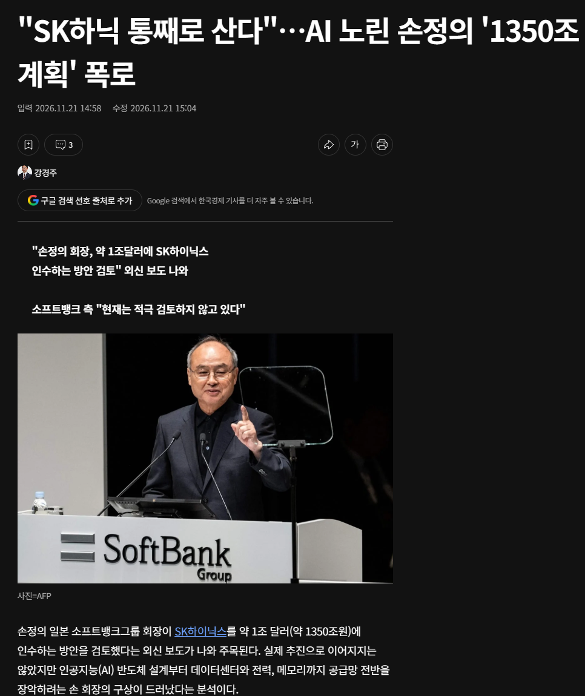

적대적 m&a 모두 허용
예시
과거 고려아연 분쟁 전 50만원대 -> 분쟁 후 240만원~
현재 한진칼 분쟁 전 8~9만원 -> 분쟁 후 23만원~
최근엔 이런 루머도

적대적 m&a 모두 허용
예시
과거 고려아연 분쟁 전 50만원대 -> 분쟁 후 240만원~
현재 한진칼 분쟁 전 8~9만원 -> 분쟁 후 23만원~
최근엔 이런 루머도

나는 저거 좋아보이긴 하는데 딱 하나 마음에 걸리는게 중국이 다 처먹을 거 같음
이건 아니지.
거버넌스가 개병신이라 그렇지 ㅎㅎ
분할상장이나 막으면 좋겠는데
이미 한국 큰 기업들은 다 나눠버리긴 했네
요즘들어서 막긴했음
이미 늦은감이있지만
요번년도 상법개정에서 막힘
진짜 늦어도 너무 늦음
셋이 하나를 상대한다
부작용이 매우 심한 제안이니 만약 시행된다 해도 5년에서 10년간의 유예기간은 줘야할듯.
저 얘기 나온지가 언젠데 ㅋㅋ
유예기간을 준다고 해서 저 방향으로 천천히 갈까?
아니면 기적의 꼼수 논리를 만들어서 회피하려고 할까?
나는 무조건 후자라고 보는데
얘기 나온지는 중요치 않고 시행 전 공시 후 유예기간이 중요하지.
별 잡다한 이야기 다 나오는 판인데 오너입장에서 그거 다 신경써야하나.
근데 요새는 지배주주의 국적을 중시하는 트렌드로 가는 거 같음 미국의 틱톡 청문회나 라인사태등
미국이 초강대국이고 미국 기업들은 전세계를 상대로 영업을해서 뭘해도 per pbr이 기형적으로 높음. 아무리 중국이 뜬다 인도가 뜬다 인구수가 10억이다 ㅇㅈㄹ을해도 지난 100년간 미국인 인구수는 열등해도 소비력이 장난 아니라서 경제규모 시장규모는 단순 인구수 싸움이 아니란거 잘앎. 대신 적대적 m&a는 자본주의 끝판왕이라 한전이든 삼전이든 돈많으면 중국자본이 사버릴수 있는 엄청난 리스크까지 안고가야되서 미국같은 경쟁럭 초상위권아니면 활발하게 진행안되거나 국가 부도직전의 위기상황때마 몇몇 알짜기업들이 넘어가는게 전부임. 사실상 그이후 매수한 기업이나 펀드사들이 가치 펌핑을 해버리니 매도했던 기업가격이상이라 사실상 비가역적인(번복이 불가한) 거래라서 ㅈㄴ 신중하게 결정될 필요가 있음.
중국이나 러시아 일본이 한전을 사버린다? 봐줄수 없을걸. 물론 한전이야 공공성의 끝판왕이라 불가침영역이고 추진조차 안되겠지만 바로 그밑에 수많은 알짜기업들이 외국자본에 넘어간다 생각하면 끔찍하긴함. 그거 노리고 필수재 시장중하나인 통신사 시장보면 국가 안보측면에서 재벌이 불가피하게 양산되지만 안고갈수밖에 없음. 그래서 통신사보면 각국 1위 통신업체 회사는 재벌 카르텔 형성함. 남아공이라든지 멕시코라든지 중국이라든지 어쩔수 없이 소수 독과점 체제를 안고가는 패널티는 안고갈수밖에 없지. 아무리 동맹국이라는 미국이 한국 하나의 통신사로 군림해서 군사지역이든 도서산간지역이든 기지국 멋대로 설치하먼 봐줄 국가가 어딨음ㅋ
상속하려고 피비알 관리 안하니깐 그렇지
미국식 가치평가가 무의미함 상장사 쪼게고 지주사 지분으로 지랄해버리니까 저걸 다 열면 그냥 삼하 중국기업 되겠지 짱츠 마냥
재수없음 홈플러스가 모든 기업에서 나오는거고 좋으면 미국되는거고 난 전자가 더 많이 나올거 같기는 해
적대적인수합병(국내대기업은 지켜주고 중소기술기업은 안지켜줌)
인수합병 후 해고대잔치 후 기업 원가절감으로 쥐어짜 너덜너덜하게 만들어서 사업 조각내서 비싸게 팔기
뭐 미국은 적대적 m&a가 있는줄 아나 ㅋㅋㅋ 포이즌필 이라는 제도도 있고, 차등의결권도 있고 한대.
방어 수단이 있는것도 사실이지만, 방어 수단도 무한정 쓸 수 있는게 아닌 한도가 정해져 있고,
m&a 하려는 입장에서는 그것까지 계산하고 시도하는거니까
현재 칩 이랑 로봇산업은 국가전략 기밀산업으로 철저히 보호 해야함
그런데 손상데스가 돈으로 한큐에 가져갈려고 한다??
주인님 걱정해주는 노예 등장해주세요
ㅋㅋㅋ
근데 그거 선진국 주식시장이라고 다 허용해주진않음. 메인 대기업들 중국자본으로 10퍼 채우기 일도아님. 그거 막으려고 시스템으로 다 막아놓긴함. 다만 한국이 이미 선진국임에도 주식시장은 신흥국으로 분류됨. 진짜 오너 체제로 가고싶으면 비상장으로나 가능하게 해야지 상장기업에 지분율도 적은데 오너 위주로 간다는게 아무래도 신흥국 시장으로 여전히 유지되는 여러가지 이유 중에 하나일거
중국 자본 막을 방법이 없자너
저거하면 중국자본이문제냐 ㅋㅋ 미국자본도 들어와서 다먹어치우지 월가가 조스로보이나 유대자본이면 전세계다먹고도 남는다 이미 SnP500기업 지배구조보면 1위부터 500위 모든기업에 블랙록 스테이트스트릿 뱅가드가 한 30%이상먹고있음 이3개회사가 미국자체를 먹고있는상태라보면됨 근데 한국같은 조그마한나라는 푼돈만써도 다먹음 주가올리자고 나라파는거지 몇몇 양반들 호위호식하자고 나라파는거 100년전에도 있었잖아?
먹히지 않게 행동하면 되는일